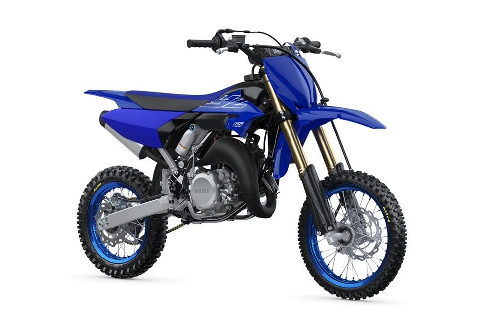

The YZ65. Trust Yamaha to get the mix of performance and easy-ride characteristics just right. And trust our engineers to offer that mix with unparalleled durability and reliability. Fitted with Yamaha’s YPVS system, this feisty two-stroke has heaps of easy-to-use torque. And handling is predictable and assured thanks to tried and tested chassis design and industry leading KYB suspension. YZ65 offers all the fun, performance and dependability of Yamaha’s bigger YZs. It’s the first step on a long journey - a journey that will keep young guns with the bLU cRU and firmly within the VictorYZone.
